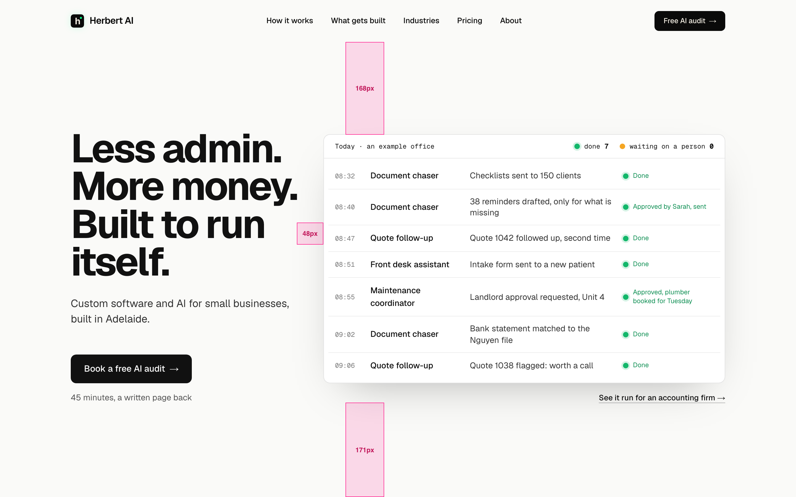
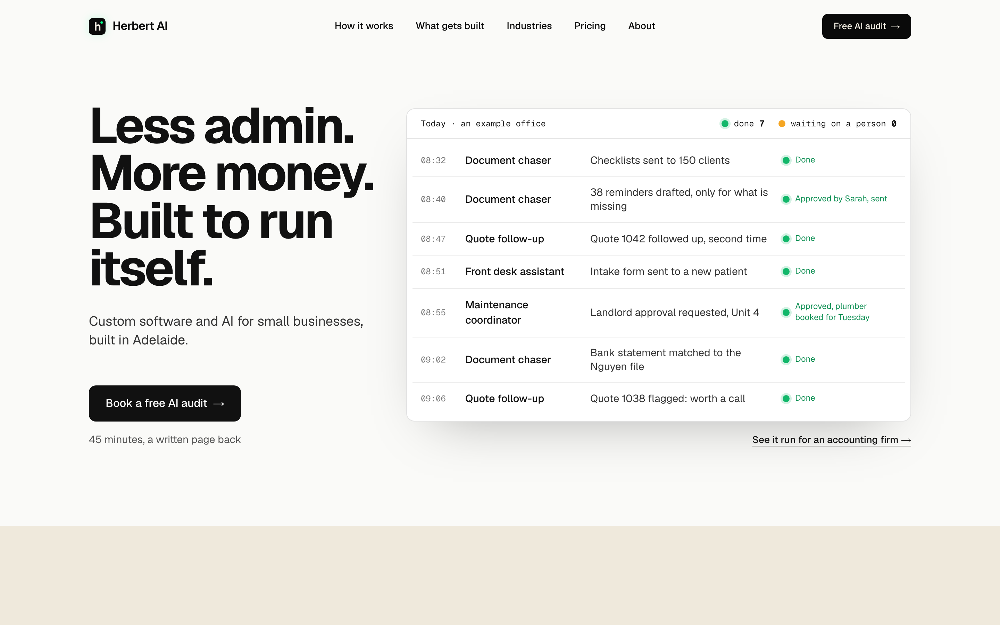
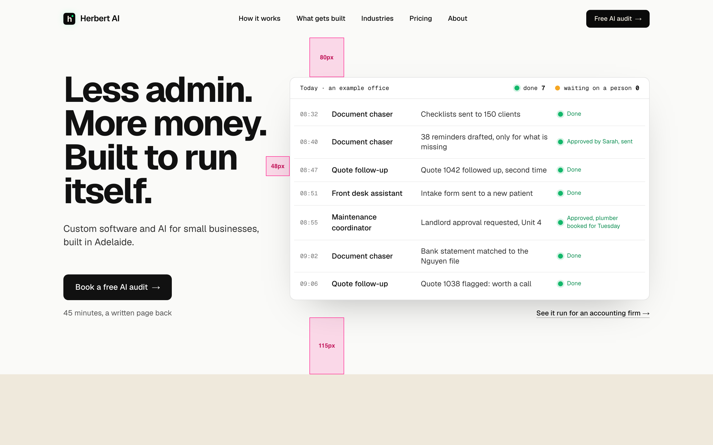
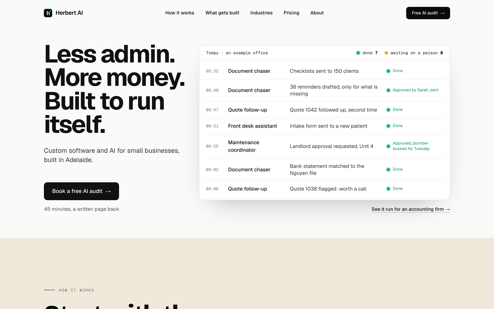
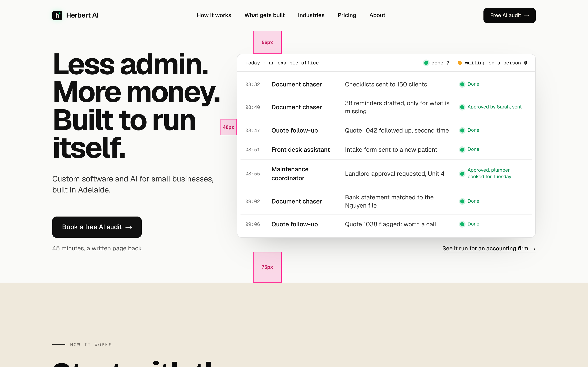
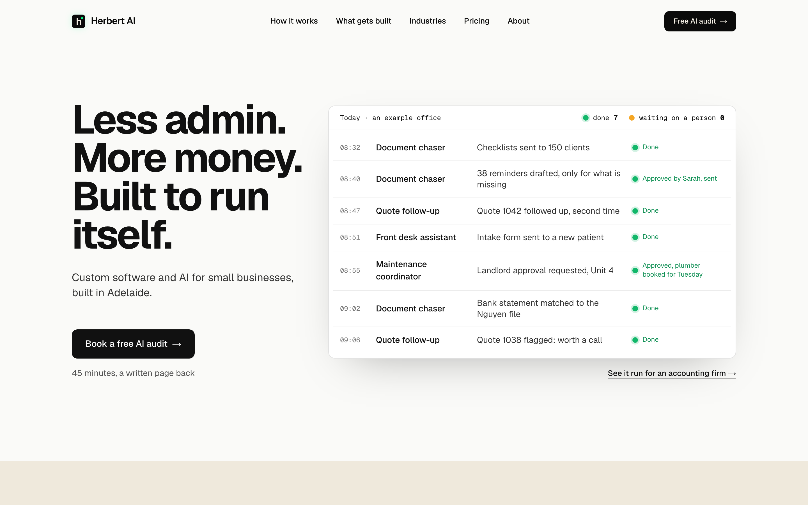
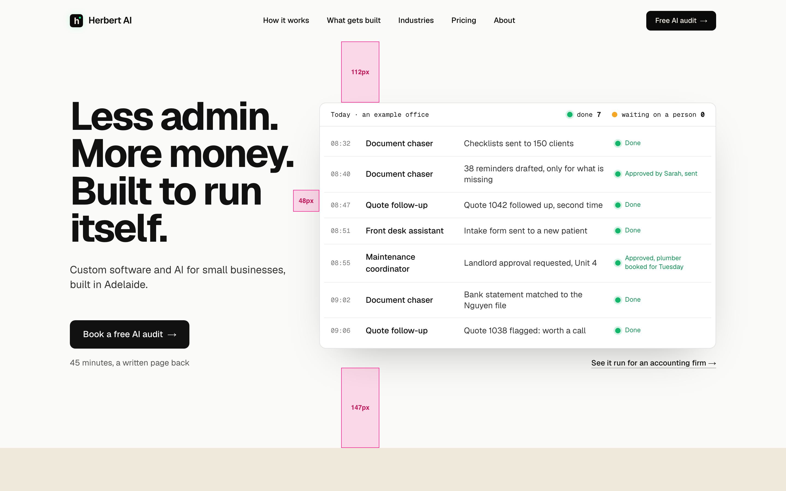

3. Exactly one screenThe hero fills the screen under the header with the content centred in it, and the next section starts right at the fold. Clean, but nothing below hints that the page keeps going.


The whole first screen of a 1440 by 900 laptop, so the fold (the bottom edge) shows. Clean on the left; on the right the three gaps are measured: above the headline, between the text and the board, and below the hero.






